スタンプで、
もっと気持ちを伝えよう。
かわいい・楽しい・使いやすいスタンプを、気分や色から探せます。
💗 💛 💙
ジャンルから探す
まずはここから♥
あいさつ☺
リアクション•••
一言・返事♡
感情・気持ち▣
季節・イベント⌂
日常・生活🐾
動物・生き物🍴
食べ物•••
その他色・雰囲気から探す
キャラクターではなく「見た目」で分類♥
ピンク・かわいい☀
イエロー・元気●
ブルー・さわやか★
パープル・大人♧
グリーン・自然♥
レッド・情熱●
モノトーン一発返信！よく使う言葉
LINEを開いたまま、サッと返せる人気のスタンプ
まずは定番から1
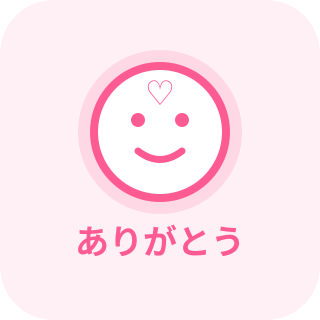
2
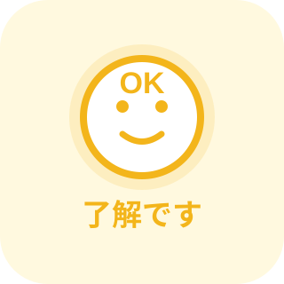
3
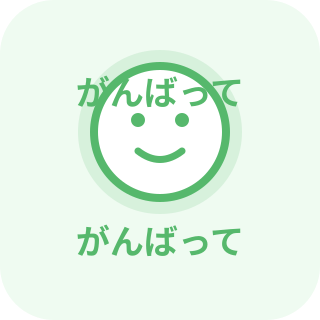
4
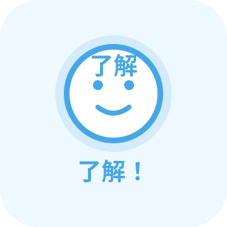
5
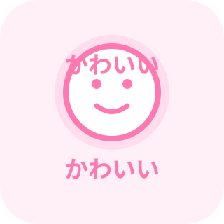
6
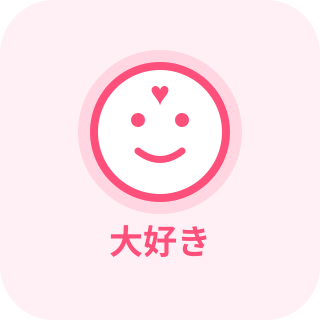
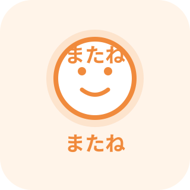
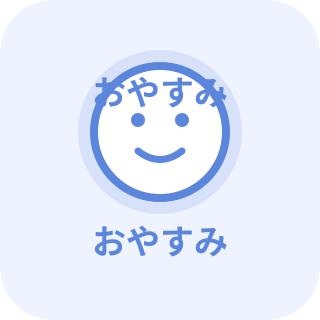
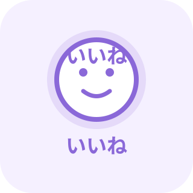
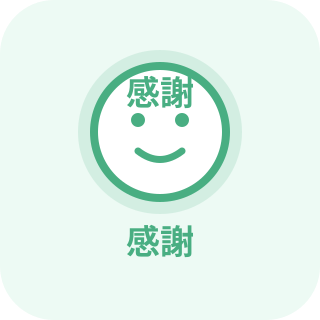
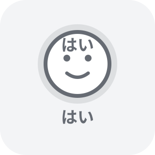
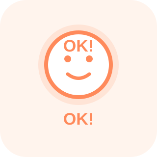
このポータルの考え方
1万個以上でも迷子にならないために① 用途で探す
「ありがとう」「了解」など、今送りたい言葉から探せる。
② 色で探す
キャラ名を覚えていなくても、ピンク・青などで絞れる。
③ タグを重ねる
「ハート＋かわいい＋ありがとう」のように複数条件で整理。